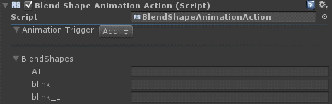

The Blend Shape Animation action couples Blend shapes to animations based on Animation Trigger. When you add the action to a Game Object with Blend shapes, the action configuration shows the list of Blend shapes and the associated animation.
 This action requires Unity 4.3.0 or higher.
This action requires Unity 4.3.0 or higher.